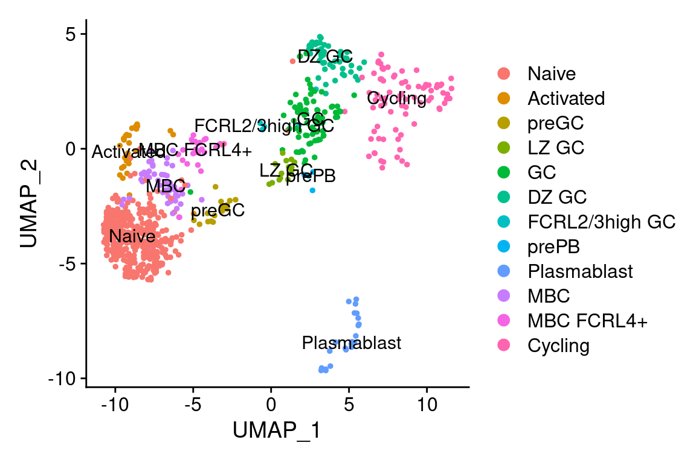
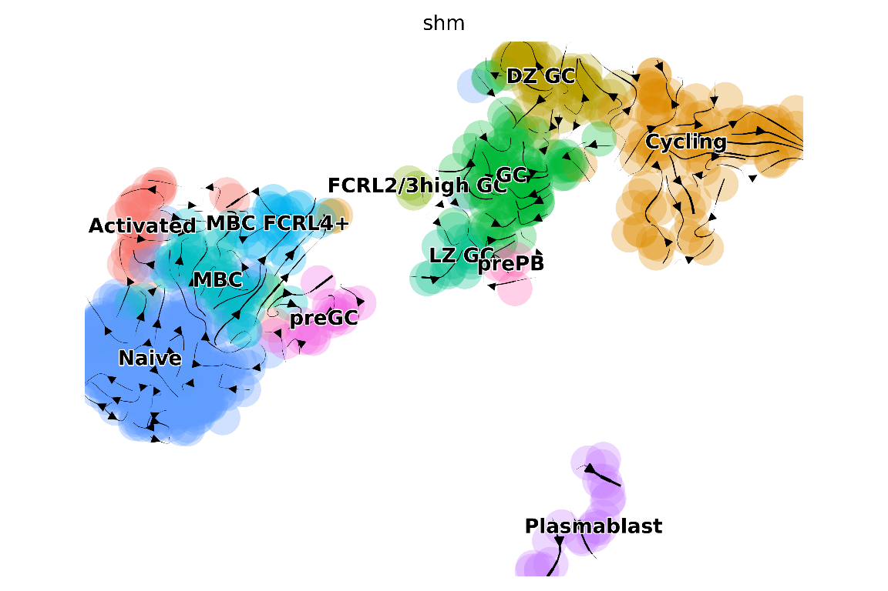
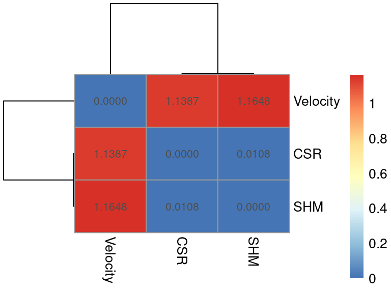

Comparing state transitions inferred using CSR, SHM and RNA velocity
comparison.RmdIntroduction
In this vignette we will show you how to compare the transitions inferred using CSR and SHM using sciCSR, against those based on RNA velocity. You are advised to follow the Basic sciCSR usage vignette first to understand the basic functionalities of sciCSR. Here, we will use sciCSR to infer state transitions from B cell scRNA-seq data based on CSR and SHM information, utilise the same framework to extrapolate transitions based on RNA velocity, and compare these inferences visually.
Start by loading the sciCSR package. Before you run any
examples/analysis with sciCSR for the FIRST time, run the
prepare_sciCSR() function - this will install all python
dependencies for sciCSR to function.
library(sciCSR, quietly = TRUE)
# We also need the Seurat package as sciCSR interfaces
# with Seurat data objects to manipulate scRNA-seq data
library(Seurat)
# Run this if this is the first time you set up sciCSR on
# your machine; this set up the dependencies in python
prepare_sciCSR()## [1] "All dependencies have been installed. Have fun with running sciCSR!"Load the dataset
In this example we will utilise B cell scRNA-seq data from tonsil samples taken from King et al.. Part of this data (from the donor BCP4) is included in the sciCSR package:
king <- system.file("extdata/King_Tonsils_BCP4.rds", package = "sciCSR")
king <- readRDS(king)
print(king)## An object of class Seurat
## 320 features across 781 samples within 2 assays
## Active assay: RNA (296 features, 274 variable features)
## 1 other assay present: IGHC
## 2 dimensional reductions calculated: umap, pca
# Plot a UMAP projection
DimPlot(king, label = TRUE)
The dataset was downloaded from ArrayExpress; it came in the form of a Seurat data object where SHM information from scBCR-seq (i.e. single-cell BCR repertoire profiling) data was already added as cell metadata. For your convenience, we have used sciCSR to generate a count matrix for productive and sterile heavy-chain immunoglobulin transcripts, and attached it to the Seurat object. Check out the basic sciCSR vignette if you need any help on this analysis on your own datasets. Here, since we are going to use CSR and SHM information to infer transitions, let’s make sure we have these in place:
# SHM is already included as a column in the metadata ('IGH_MU_FREQ')
# so is the BCR isotype from repertoire sequencing ('ISOTYPE')
# calculate CSR potential (if you need help on this make sure you
# go through the basic sciCSR usage vignette first)
king <- getCSRpotential(
SeuratObj = king, reference_based = "human",
c_gene_anno_name = "ISOTYPE"
)
# We will use 'IGH_MU_FREQ' as the SHM potential
# Since sciCSR expects a column 'shm' which indicates this,
# create a column with this name
# and just replace NA with 0 as it will cause issues with NA
king$shm <- king$IGH_MU_FREQ
king$shm[which(is.na(king$shm))] <- 0RNA velocity analysis
RNA velocity analysis is typically performed using the BAM files as
input with the python packages velocyto and scVelo. We usually
start with velocyto to generate a .loom file which contains
quantification of spliced and unspliced transcripts, and then used
packages such as scVelo to calculate RNA velocity and generate
visualisations (e.g. plot streams of arrows on top of UMAP projection to
depict the direction of flow based on RNA velocity.
In sciCSR, we expect users to have run velocyto on the input BAM files, but we provide functions in R that interface with scVelo at the backend to perform RNA velocity calculations. As such, you can stay within R to perform these analyses!
We have made avaialble 2 .loom files corresponds to the
scRNA-seq data shown above. They are too large to be included in the
sciCSR package itself, but you can download them and try this out
yourself:
loom_files <- c(
"https://josephng-bio.org/assets/suppdata/BCP004_Total.loom",
"https://josephng-bio.org/assets/suppdata/BCP004_MBC.loom"
)
for(file in loom_files){
download.file(file, destfile = basename(file), mode = 'wb')
}Here, sequencing reads from cells from the BCP004 samples come from
two sequencing libraries, one specifically from the memory B cells (MBC)
and another from total B cells. The .loom files contain
counts of unspliced and spliced transcripts from each cell represented
in the two libraries. Our goal is first to merge these two count
matrices with the standard gene expression counts stored in the Seurat
data object, and then pass this merged data to scVelo to calculate RNA
velocity.
sciCSR offers functions to merge these .loom files into
one and subsequently to the Seurat object, and then export this for
scVelo’s use by means of a python AnnData object. But
first, let’s have a deeper look into what exactly are the outstanding
issues that sciCSR is trying to solve in this task.
We can actually see the sequencing library information reflected in the Seurat data object:
# There is a column 'Sample' in the Seurat object that contains
# this information
# We can show this by colours on the UMAP
DimPlot(king, group.by = "Sample")
# This is also reflected in the cell barcodes
# Cells from the MBC library
print(head(Cells(king)[which(king$Sample == "BCP4_MBC")]))## [1] "BCP4_MBC_AAACCTGCATAGTAAG" "BCP4_MBC_AAAGCAAGTACCAGTT"
## [3] "BCP4_MBC_AAAGCAAGTAGGCTGA" "BCP4_MBC_AACACGTAGATGTAAC"
## [5] "BCP4_MBC_AACTCAGCAAGTAATG" "BCP4_MBC_AACTGGTAGAGACGAA"## [1] "BCP4_Total_AAATGCCTCGCCTGAG" "BCP4_Total_AACACGTTCTAACGGT"
## [3] "BCP4_Total_AACCATGAGAATTGTG" "BCP4_Total_AACCGCGGTCAGAGGT"
## [5] "BCP4_Total_AACCGCGGTTACCGAT" "BCP4_Total_AACTCAGCAAGCCCAC"We have prefixes BCP4_MBC_ and BCP4_Total_
appended to the cell barcodes. If we inspect the two .loom
files separately, this isn’t the case:
# the function 'read.loom.matrices' simplified fron the one in the
# velocyto.R package can read each loom matrix separately
# here read one just to see what's in there
mbc_loom <- read_loom_matrices(basename(loom_files[1]))
print(summary(mbc_loom))## Length Class Mode
## spliced 39272998 dgCMatrix S4
## unspliced 39272998 dgCMatrix S4
## ambiguous 39272998 dgCMatrix S4
# the loom file basically contain 3 matrices, one for spliced transcript
# counts, one for unspliced and one for ambiguous (i.e. it can't tell
# whether it is spliced or not)
# just print the top corner of the spliced matrix here
print(mbc_loom[["spliced"]][1:3, 1:3])## 3 x 3 sparse Matrix of class "dgCMatrix"
## BCP004_Total:AAAGATGCACTAGTAC BCP004_Total:AAAGATGGTTGTCGCG
## FAM138A . .
## AL627309.1 . .
## AL627309.3 . .
## BCP004_Total:AAAGCAACACGGATAG
## FAM138A .
## AL627309.1 .
## AL627309.3 .In this case, although for cell barcodes are also appended with a
prefix, the formats of these are different: in the Seurat object, it is
BCP4_Total_, here it is BCP004_Total: (notice
‘BCP004’ versus ‘BCP4’, and the underscore/colon at the trailing end).
This will cause problems with merging if not addressed. Luckily, in
sciCSR we offer a function combineLoomFiles() which allows
you to combine separate loom files into one, while checking for these
discrepancies of cell barcodes and try to correct them. You will need to
pass the Seurat object as one of the arguments to call this function,
while at the same time give a list of sample names, in the same
order as the vector of loom files you supply - see below:
# merging loom files
combineLoomFiles(
loom_files = c("BCP004_Total.loom", "BCP004_MBC.loom"),
new_loom_filename = 'King_Tonsils_BCP4_combined.loom',
SeuratObj = king,
# the order below corresponds to the order in the argument 'loom_files'
sample_names = c("BCP4_Total", "BCP4_MBC"),
seurat_sample_column = "Sample"
)## Assuming the order in sample_names correspond to the order in loom_files. If this is not the case please rerun this function ensuring the order of these vectors match up.## [1] "Loom object with velocyto spliced/unspliced counts written to file 'King_Tonsils_BCP4_combined.loom'."We are next ready to merge these unspliced and spliced counts to the
annotated data object. Since we are going to rely on the python pacakge
scVelo for RNA velocity analysis, here we convert the Seurat object into
an AnnData file, and then merge the velocyto data into this AnnData
object - we provide two separate functions,
convertSeuratToH5ad() and
mergeVelocytoWithGEX().
# convert the Seurat object into AnnData
convertSeuratToH5ad(
SeuratObj = king, assays = "RNA",
h5ad_filename = "King_Tonsils_BCP4.h5ad"
)## [1] "King_Tonsils_BCP4_assay-RNA.h5ad"
# add velocyto loom data into AnnData
mergeVelocytoWithGEX(
anndata_file = "King_Tonsils_BCP4_assay-RNA.h5ad",
loom_file = 'King_Tonsils_BCP4_combined.loom',
anndata_out_filename = 'King_Tonsils_BCP4_assay-RNA_velocyto.h5ad'
)## [1] "AnnData file with velocyto counts merged is written to King_Tonsils_BCP4_assay-RNA_velocyto.h5ad"This file King_Tonsils_BCP4_assay-RNA_velocyto.h5ad
contains the unspliced/spliced transcript counts which can be used as
input to the scVelo RNA velocity calculation pipeline. In sciCSR we
provide a R function run_scVelo() that calls scVelo at the
backend to perform this calculation - all you need to do is to supply
this file and a new filename where the calculated RNA velocity
statistics will be stored.
# split into wt and kd
run_scVelo(
anndata_file = "King_Tonsils_BCP4_assay-RNA_velocyto.h5ad",
anndata_out_filename = "King_Tonsils_BCP4_assay-RNA_velocyto_scVelo.h5ad"
)## Warning: The request to
## `use_python("/home/josephn/anaconda3/envs/scicsr/bin/python")` will be ignored
## because the environment variable RETICULATE_PYTHON is set to
## "/home/josephn/anaconda3/envs/scicsr/bin/python3.9"We can project the RNA velocity results onto the UMAP using the plotting functionalities within scVelo. Once again, in sciCSR you can do this by calling a function in R without the need to code in python - sciCSR calls scVelo at the backend and return you the plot within R:
plot_arrows(
anndata_file = "King_Tonsils_BCP4_assay-RNA_velocyto_scVelo.h5ad",
# we are using RNA velocity information to project arrows
based_on = "velocity",
# we want to indicate cell cluster (in the column 'CellType'
# of the metadata) using different colours
colour.by = "CellType",
# you can indicate a comma-separated list of colours
# each corresponding to a CellType (this is optional)
cols = c("#F8766D", "#DE8C00", "#B79F00", "#7CAE00", "#00BA38",
"#00C08B", "#00BFC4", "#00B4F0", "#619CFF", "#C77CFF",
"#F564E3", "#FF64B0"),
style = "stream"
)## Warning: The request to
## `use_python("/home/josephn/anaconda3/envs/scicsr/bin/python")` will be ignored
## because the environment variable RETICULATE_PYTHON is set to
## "/home/josephn/anaconda3/envs/scicsr/bin/python3.9"We now have a RNA velocity plot based on code entirely in R (sciCSR does all the magic in python in the backend)! We can also plot RNA velocity as a grid of arrows rather than as arrow streams as above:
plot_arrows(
anndata_file = "King_Tonsils_BCP4_assay-RNA_velocyto_scVelo.h5ad",
# we are using RNA velocity information to project arrows
based_on = "velocity",
# we want to indicate cell cluster (in the column 'CellType'
# of the metadata) using different colours
colour.by = "CellType",
# you can indicate a comma-separated list of colours
# each corresponding to a CellType (this is optional)
cols = c("#F8766D", "#DE8C00", "#B79F00", "#7CAE00", "#00BA38",
"#00C08B", "#00BFC4", "#00B4F0", "#619CFF", "#C77CFF",
"#F564E3", "#FF64B0"),
# indicate 'grid' if you want to plot arrows onto a grid of fixed points
style = "grid",
# (Optional) you can give the plot a customised title as well
title = "King et al. Donor BCP4 RNA velocity on a grid"
)## Warning: The request to
## `use_python("/home/josephn/anaconda3/envs/scicsr/bin/python")` will be ignored
## because the environment variable RETICULATE_PYTHON is set to
## "/home/josephn/anaconda3/envs/scicsr/bin/python3.9"Plotting transitions based on CSR and SHM
Since sciCSR infers transitions using CSR and/or SHM information, we would ideally want to also visualise these, and compare these inferred transitions against those based on RNA velocity. We can do so by projecting the transitions onto UMAP similar to what is shown above for RNA velocity, thanks to functionalities support in the CellRank package. Before we show you these, however, some points of caution:
Inferred transitions based on CSR and/or SHM can be substantially different from those based on RNA velocity. Specifically, it is fairly conceivable that depending on the dataset, even using CSR/SHM we will not see much prominent transitional flows. Part of it may be genuine (e.g. you are sampling mainly mature B cells at a steady state with little difference in CSR/SHM patterns) - in fact, it has been noticed that one common problem with RNA velocity is the prominence of flows (sometimes even pointing to a counterintuitive direction) in mature immune cell types where little dynamical behaviour is expected. Another potential reason for the lack of prominent flows in these sort of visualisation is, cells are not necessarily organised by the states defined using CSR/SHM information on the UMAP. For example, IgG1+ and IgA1+ B cells may occupy similar positions on a UMAP projection simply because they share transcriptomic similarities outside of the immunoglobulin loci. In this case, even it is conceivable that there can be a G1-to-A1 transition, projection of arrows onto the UMAP reduction isn’t particularly helpful as we may not have these states positioning on the UMAP in a way that we can highlight transitions between them using the arrows.
Anyway, enough health warning - we can also use the
plot_arrows() function to project CSR/SHM information onto
the UMAP. Just indicate this in the based_on argument:
# Let's say we want to first project CSR-inferred transitions
# onto the UMAP
plot_arrows(
anndata_file = "King_Tonsils_BCP4_assay-RNA_velocyto_scVelo.h5ad",
# allowed values: 'velocity' (default), 'csr' or 'shm'
based_on = "csr",
colour.by = "CellType",
cols = c("#F8766D", "#DE8C00", "#B79F00", "#7CAE00", "#00BA38",
"#00C08B", "#00BFC4", "#00B4F0", "#619CFF", "#C77CFF",
"#F564E3", "#FF64B0"),
style = "stream"
)## Warning: The request to
## `use_python("/home/josephn/anaconda3/envs/scicsr/bin/python")` will be ignored
## because the environment variable RETICULATE_PYTHON is set to
## "/home/josephn/anaconda3/envs/scicsr/bin/python3.9"And another plot using SHM information:
plot_arrows(
anndata_file = "King_Tonsils_BCP4_assay-RNA_velocyto_scVelo.h5ad",
based_on = "shm",
colour.by = "CellType",
cols = c("#F8766D", "#DE8C00", "#B79F00", "#7CAE00", "#00BA38",
"#00C08B", "#00BFC4", "#00B4F0", "#619CFF", "#C77CFF",
"#F564E3", "#FF64B0"),
style = "stream"
)## Warning: The request to
## `use_python("/home/josephn/anaconda3/envs/scicsr/bin/python")` will be ignored
## because the environment variable RETICULATE_PYTHON is set to
## "/home/josephn/anaconda3/envs/scicsr/bin/python3.9"
More detailed comparisons
The visualisations above clearly show some similarities (for example, the transitions from MBC pointing towards the direction of germinal center [GC]) and differences (e.g. strong transitions in the GC based on RNA velocity appears not backed up with CSR/SHM) between inferences based on RNA velocity versus CSR/SHM. sciCSR provides further functionalities to compare these different sets of inferred transitions. One way to gain further insights would be to apply Transition Path Theory (TPT) to estimate the amount of fluxes between states - we have covered TPT in the basic sciCSR usage vignette. You may want to take a look at the vignette and see how we can do that.
Here we show you another way to answer the question of ‘How different are the transitions inferred using CSR/SHM to those based on RNA velocity’. In sciCSR we uses CSR/SHM information to fit models of state transitions using Markov State Models (MSM). One powerful properties of MSM is, they specify the transition likelihoods between every state in the data, such that we can ‘generate’/‘simulate’ new transitions as if we have data from a new cell and follow how it moves across the landscape of states. Similar MSMs would produce similar pathways of transitions across this landscape; we can take a note at the frequencies each state is visited in these simulated pathways, and then derive a numerical metric to quantify the similarity in terms of the frequencies of visiting each states in these MSM-simulated paths (Illustration below).
In sciCSR, the way we can perform this analysis is, first fit
transition models and obtain separate R objects which store these
models. We can then use the function
compareTransitionMatrices() to quantify the similarities of
these transition models:
# Let's first fit transition models using velocity/CSR/SHM
# separately using fitTransitionModel()
# Velocity
g_velo <- fitTransitionModel(
anndata_file = "King_Tonsils_BCP4_assay-RNA_velocyto_scVelo.h5ad",
mode = "velocity"
)## Warning: The request to
## `use_python("/home/josephn/anaconda3/envs/scicsr/bin/python")` will be ignored
## because the environment variable RETICULATE_PYTHON is set to
## "/home/josephn/anaconda3/envs/scicsr/bin/python3.9"
# CSR
g_csr <- fitTransitionModel(
anndata_file = "King_Tonsils_BCP4_assay-RNA_velocyto_scVelo.h5ad",
mode = "pseudotime", pseudotime_key = "csr_pot"
)## Warning: The request to
## `use_python("/home/josephn/anaconda3/envs/scicsr/bin/python")` will be ignored
## because the environment variable RETICULATE_PYTHON is set to
## "/home/josephn/anaconda3/envs/scicsr/bin/python3.9"
# SHM
g_shm <- fitTransitionModel(
anndata_file = "King_Tonsils_BCP4_assay-RNA_velocyto_scVelo.h5ad",
mode = "pseudotime", pseudotime_key = "shm"
)## Warning: The request to
## `use_python("/home/josephn/anaconda3/envs/scicsr/bin/python")` will be ignored
## because the environment variable RETICULATE_PYTHON is set to
## "/home/josephn/anaconda3/envs/scicsr/bin/python3.9"
comparison <- compareTransitionMatrices(
# these are the transition matrices based on
# velocity/CSR/SHM
matrix_list = list(g_velo$transition_matrix,
g_csr$transition_matrix,
g_shm$transition_matrix),
SeuratObj = king, cells = Cells(king),
# how do we want to group the cells? we will describe
# each step in the simulated pathways using this
# in this case we want to describe pathways in terms
# of what cell type
group.by = 'CellType',
# We will compare these simulated paths using Kullback-
# Leibler divergence on the frequencies each state is visited
distance_metric = 'KL'
)## Sampling realisations from Markov chain 1 ...## Sampling realisations from Markov chain 2 ...## Sampling realisations from Markov chain 3 ...## Comparing the list of transition models ...## Metric: 'kullback-leibler' using unit: 'log2'; comparing: 3 vectors.The output of this function is a list with two elements: the
sampled_transitions are the frequencies each transition
(i.e. in this case, moves from one cell type to another) is visited in
the pathways sampled by considering the transition model fitted using
velocity/CSR/SHM information. Another element of this list (name
distance) is a matrix which shows the difference between
each pair of transition matrix, ordered based on the one given in
matrix_list. The values in this matrix is a divergence
metric (in this case Kullback-Leibler
divergence) to quantify how different the transitions implicated in
one distance matrix is different from another. The larger this value,
the more different the implied transitions are.
distance_matrix <- comparison$distance
rownames(distance_matrix) <- c("Velocity", "CSR", "SHM")
colnames(distance_matrix) <- c("Velocity", "CSR", "SHM")
# We can plot this matrix as a heatmap
library(pheatmap)
pheatmap(distance_matrix, display_numbers = TRUE, number_format = "%.4f")
Based on this plot, we can see that velocity-based transitions are substantially more different than those based on CSR/SHM information. This serves more as an overall metric to quantify the differences between those transition models, whilst the arrow projection and/or TPT-based fluxes, both outputs of different sciCSR functions, will allow you to study further what exactly are the differences in the inferences made using each type of biological information (velocity/CSR/SHM)!